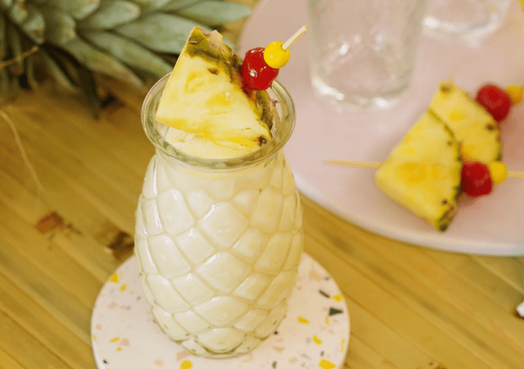

Pina Colada Cocktail

Description
If you like piña coladas, you're in luck! We've got the 3-ingredient recipe for you. Culinary producer Nicole McLaughlin, a.k.a. NicoleMcMom, came up with this easy piña colada recipe that is easy to throw together quickly for summertime entertaining.
Ingredients
- 2 cups fresh or frozen pineapple
- 1 can sweetened condensed milk
- 7 oz. white rum
Steps
- Combine pineapple, sweetened condensed coconut milk, rum, and ice (if using) in a blender.
- Blend until smooth.
- Pour into glasses and serve immediately.
- Enjoy!